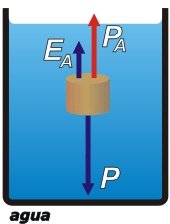

NO ME SALEN
EJERCICIOS RESUELTOS DE FÍSICA DEL CBC
FLUIDOS - PRINCIPIO DE ARQUÍMEDES |
|

|
| |
FIS H.18) Un cuerpo tiene un peso aparente de 800 N sumergido totalmente en agua y de 600 N sumergido
totalmente en un líquido de densidad igual a 1,2 g/cm³. Hallar cuál es su peso aparente cuando está sumergido totalmente en alcohol de densidad igual a 0,8 g/cm³
|
¿Qué es eso del peso aparente? Te cuento, no se trata de una definición de la Física, más bien se trata de una expresión de uso común entre aquellas personas que cargan objetos debajo del agua, como los buzos. Cuando se cargan los tanques de oxígeno en Tierra les pesan mucho en la espalda, y cuando entran al agua ya no es tan grave. El peso aparente de los tanques disminuyó. Creo que se entiende.
Traduciéndolo al fisicnés, se llama peso aparente a la diferencia entre el peso de un cuerpo (que no cambia) y el empuje que recibe del líquido en el que está sumergido. Pensá que esa diferencia es la que tenés que hacer vos si querés cargar al cuerpo.
Veo que en este ejercicio hay tres situaciones diferentes, vamos a llamarlas A, B, y C (qué original, lo mío). |
|
|
|  |
|
En la situación A el peso aparente, PA, vale 800 N.
PA + EA = P
El empuje que recibe del agua, EA, es igual -según Arquímedes- al peso del líquido desalojado, o sea:
EA = ρA . g . V
Donde ρA = 1 g/cm3. De esta situación no podemos sacar mucho más, pero planteemos lo que podamos de las situaciones siguientes a ver qué pasa. |
| Ahora viene la situación B, el líquido en que se sumerge el mismo cuerpo (que tiene el mismo peso), tiene una densidad de ρB = 1,2 g/cm3 (se trata de una alusión clarísima al pis de iguana desorientada, el único líquido conocido con esa densidad). |
 |
|
Nuevamente, la suma de fuerzas será:
PB + EB = P
Donde PB es el peso aparente en este líquido asqueroso y en este caso vale 600 N.
Además sabemos que:
EB = ρB . g . V
|
| Por último, en la situación C, alcohólica, pasan las misma cosas que pasaron antes, claro que con otros valores. La densidad del alcohol vale ρC = 0,8 g/cm3. Veamos qué tenemos: |
 |
|
Nuevamente la suma de fuerzas:
PC + EC = P
En la que el peso aparente en el alcohol se llama PC. Y el empuje que realiza el alcohol...
EC = ρC . g . V
Supongo que si el autor del ejercicio la pensó correctamente habrá suficiente cantidad de ecuaciones que de incógnitas, y una de ellas es la que solicita el enunciado, PC. (Son 6 por 6... ji, ji, ji). |
|
|
|
Te hago uno de los 27.238 caminos posibles: igualo las dos ecuaciones de equilibrio de las situaciones A y B.
PA + EA = PB + EB
Reemplazo los empujes por sus iguales según Arquímedes:
PA + ρA . g . V = PB + ρB . g . V
Reagrupo y despejo el volumen.
PA – PB = ρB . g . V – ρA . g . V
PA – PB = ( ρB . g – ρA . g ) V
V = ( PA – PB ) / ( ρB . g – ρA . g )
Con esta expresión del volumen voy a la última ecuación de Arquímedes:
EC = ρC . g . ( PA – PB ) / ( ρB . g – ρA . g )
Cancelo g, y lo meto en la ecuación de equilibrio de C.
EC = ρC . ( PA – PB ) / ( ρB – ρA )
PC + ρC . ( PA – PB ) / ( ρB – ρA ) = P
Reemplazo el peso del cuerpo por la ecuación de equilibrio de A (o de B):
PC + ρC . ( PA – PB ) / ( ρB – ρA ) = PA + ρA . ( PA – PB ) / ( ρB – ρA )
PC = PA + ( PA – PB ) ( ρA – ρC ) / ( ρB – ρA )
PC = 800 N + 200 N . 0,2 g/cm³ / 0,2 g/cm³
|
|
el peso de un cuerpo no cambia por más que se sumerja en un líquido
no tenés que confundir el peso de un cuerpo (un negocio privado entre el cuerpo y la Tierra), con el peso aparente (la fuerza que vos tendrías que hacer para levantarlo estando sumergido) |
PC = 1.000 N |
peso aparente al sumergirlo en alcohol |
|
|
|
| |
|
 |
Me contuve de calcular ninguna de las otras 5 incógnitas ¿Hago bien o hago mal? ¿Qué te parece, y por qué? Igualmente, si encontrás un camino algebraico más económico, pasámelo.
DESAFÍO: Date el gusto... decime cuánto valen las otras 5 incógnitas. |
|
| |
| |
|
| Algunos derechos reservados.
Se permite su reproducción citando la fuente legítima, o sea, este sitio. Última actualización
jun-11. Buenos Aires, Argentina. |
|
|
| | |
|
|